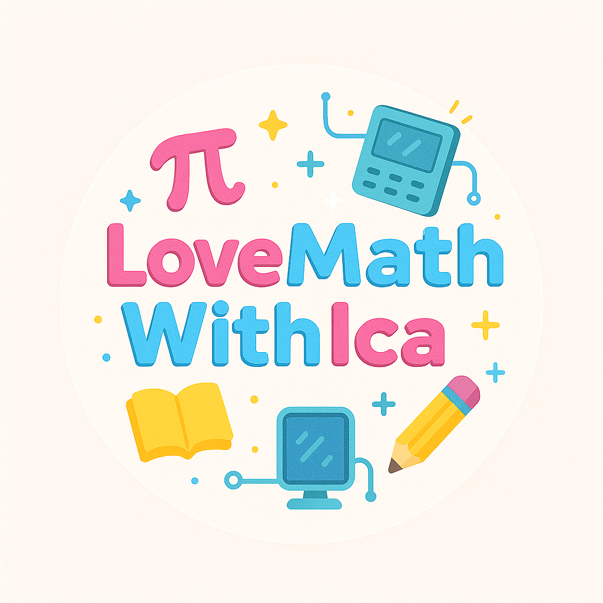
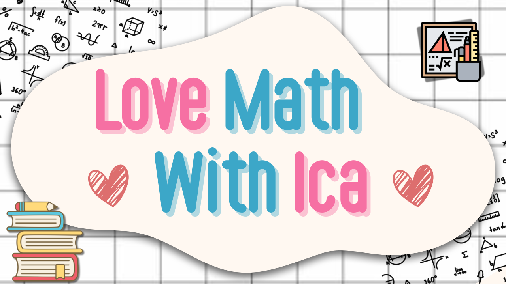
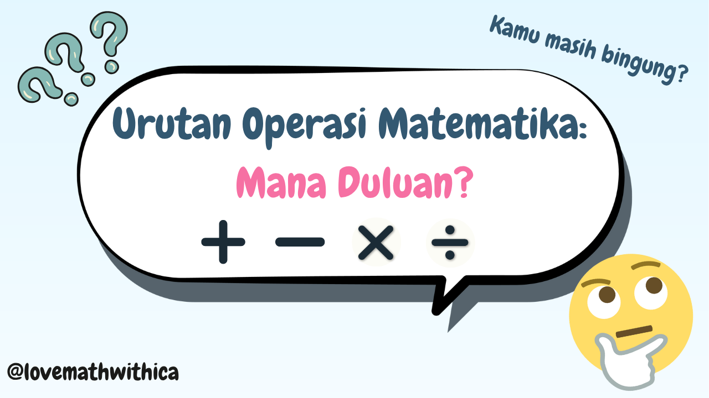

|
 Love Math With Ica |
||
|---|---|---|
| YouTube Love Math With Ica | ||
 Video Perkenalan Love Math With Ica |
Love Math With Ica adalah channel edukasi Matematika yang merilis video pertamanya pada 1 Agustus 2025. Channel ini saya buat untuk kamu yang ingin belajar matematika dari dasar. Di sini, kita akan membahas konsep-konsep penting Matematika hingga soal-soal UTBK, semuanya dijelaskan secara step by step seolah-olah kamu sedang diajarin langsung. Channel ini cocok untuk siswa SD-SMA, pejuang UTBK, atau siapa pun yang ingin memahami Matematika lebih dalam.
|
|
 Video Urutan Operasi Hitung |
Video pertama Love Math With Ica membahas Urutan Operasi Hitung.
|
|
|
© Rumaisha Raghib Syahidah Siregar_251402034_2025 Love Math With Ica |
||